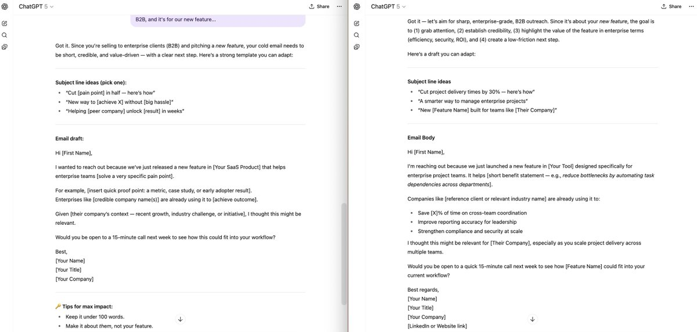

OpenAI and Anthropic engineers leaked these prompt techniques that separate beginners from experts.
I've been using insider knowledge from actual AI engineers for 6 months. The difference is insane.
Here are 5 techniques they don't want you to know (but I'm sharing anyway):
I've been using insider knowledge from actual AI engineers for 6 months. The difference is insane.
Here are 5 techniques they don't want you to know (but I'm sharing anyway):
TECHNIQUE 1: Role Assignment
Don't just ask questions. Give the AI a specific role first.
❌ Bad: "How do I price my SaaS?"
✅ Good: "You're a SaaS pricing strategist who's worked with 100+ B2B companies. How should I price my project management tool?"
The AI immediately shifts into expert mode.
Don't just ask questions. Give the AI a specific role first.
❌ Bad: "How do I price my SaaS?"
✅ Good: "You're a SaaS pricing strategist who's worked with 100+ B2B companies. How should I price my project management tool?"
The AI immediately shifts into expert mode.
Role assignment works because it activates specific training patterns. When you say "you're a copywriter," the AI pulls from copywriting examples, not generic advice.
I use this for everything. Marketing strategy? "You're a CMO." Technical advice? "You're a senior engineer." It's that simple.
I use this for everything. Marketing strategy? "You're a CMO." Technical advice? "You're a senior engineer." It's that simple.
TECHNIQUE 2: Context Stacking
Give the AI your constraints upfront. Most people bury crucial info at the end.
❌ Bad: "Write me a cold email. Oh, and it's for enterprise clients, and we're B2B, and it's for our new feature..."
✅ Good: "Context: B2B SaaS, targeting enterprise CTOs, new AI feature launch. Write a cold email."
Give the AI your constraints upfront. Most people bury crucial info at the end.
❌ Bad: "Write me a cold email. Oh, and it's for enterprise clients, and we're B2B, and it's for our new feature..."
✅ Good: "Context: B2B SaaS, targeting enterprise CTOs, new AI feature launch. Write a cold email."

Context stacking prevents back-and-forth. You get usable output on the first try instead of 5 rounds of clarification.
Pro tip: Lead with your biggest constraint. Budget? Timeline? Audience? Put it first.
Pro tip: Lead with your biggest constraint. Budget? Timeline? Audience? Put it first.
TECHNIQUE 3: Output Formatting
Tell the AI exactly how you want the response structured.
❌ Bad: "Analyze my landing page copy"
✅ Good: "Analyze my landing page copy. Format as: 1) What's working 2) What's broken 3) Specific fixes with examples."
This works on every LLM. Structure = better results.
Tell the AI exactly how you want the response structured.
❌ Bad: "Analyze my landing page copy"
✅ Good: "Analyze my landing page copy. Format as: 1) What's working 2) What's broken 3) Specific fixes with examples."
This works on every LLM. Structure = better results.
I learned this the hard way after getting rambling responses for months. Now every prompt includes format instructions.
For complex tasks, I map out the exact headings and sections I want. The AI follows your blueprint perfectly.
For complex tasks, I map out the exact headings and sections I want. The AI follows your blueprint perfectly.
TECHNIQUE 4: Few-Shot Examples
Show the AI what good looks like with 2-3 examples.
❌ Bad: "Write product descriptions"
✅ Good: "Write product descriptions like these:
Example 1: [paste good example]
Example 2: [paste another]
Now write one for: [your product]"
Show the AI what good looks like with 2-3 examples.
❌ Bad: "Write product descriptions"
✅ Good: "Write product descriptions like these:
Example 1: [paste good example]
Example 2: [paste another]
Now write one for: [your product]"
Few-shot examples are magic for creative tasks. Headlines, copy, social posts, email subject lines.
The AI learns your style from the examples and matches it. Way better than trying to describe what you want with words.
The AI learns your style from the examples and matches it. Way better than trying to describe what you want with words.
TECHNIQUE 5: Chain of Thought
For complex problems, ask the AI to think step by step.
❌ Bad: "Should I pivot my startup?"
✅ Good: "I'm considering pivoting my startup. Walk through your decision process step by step: analyze current metrics, identify problems, evaluate alternatives, then give your recommendation with reasoning."
For complex problems, ask the AI to think step by step.
❌ Bad: "Should I pivot my startup?"
✅ Good: "I'm considering pivoting my startup. Walk through your decision process step by step: analyze current metrics, identify problems, evaluate alternatives, then give your recommendation with reasoning."
Chain of thought prevents AI from jumping to conclusions. You get the reasoning, not just the answer.
This technique is clutch for business decisions, technical problems, and anything with multiple variables. The AI becomes your thinking partner, not just an answer machine.
This technique is clutch for business decisions, technical problems, and anything with multiple variables. The AI becomes your thinking partner, not just an answer machine.
These 5 techniques work on every major LLM. I use them daily across Claude, ChatGPT, Gemini, and Grok.
Start with role assignment. Add context stacking. You'll immediately see better results.
The difference between good and bad prompting is knowing these fundamentals.
Start with role assignment. Add context stacking. You'll immediately see better results.
The difference between good and bad prompting is knowing these fundamentals.
10x your prompting skills with my prompt engineering guide
→ Mini-course
→ Free resources
→ Tips & tricks
Grab it while it's free ↓
godofprompt.ai/prompt-enginee…
→ Mini-course
→ Free resources
→ Tips & tricks
Grab it while it's free ↓
godofprompt.ai/prompt-enginee…

I hope you've found this thread helpful.
Follow me @alex_prompter for more.
Like/Repost the quote below if you can:
Follow me @alex_prompter for more.
Like/Repost the quote below if you can:
• • •
Missing some Tweet in this thread? You can try to
force a refresh